mgbd services
workshop service
on site workshop
Our facility includes a workshop, so we can also do servicing and repairs on your classic Rover and certain other classics.
Whether your vehicle requires routine servicing, maintenance or repair work, our workshop allows us to provide practical support alongside our extensive range of Rover parts. Based at our facility at Wolseley Bridge in Staffordshire, the workshop gives classic Rover owners access to specialist assistance from a team familiar with these vehicles.
Some Services We Offer :
- Servicing and maintenance
- Repairs to classic Rover vehicles
- Work on certain other classic cars
- Specialist knowledge of Rover models and parts
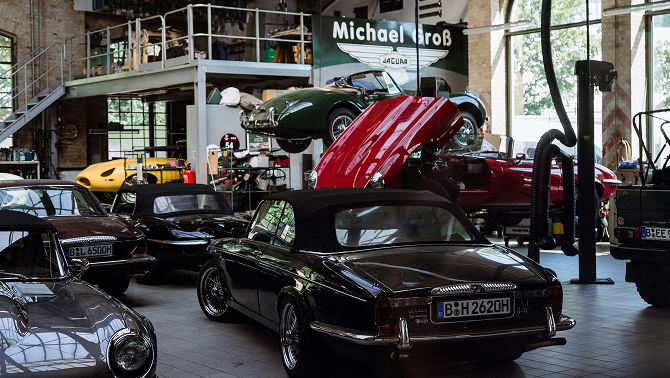
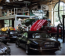
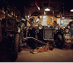
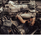
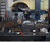
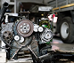
about us
“The whole job shouldn’t take more than a couple of hours unless of course your host keeps you well supplied with coffee and likes a good P6 natter.”
meet the owners
Hi, we are Mark & Angie Gray and 'MGBD SERVICES' is the part of our business dedicated to keeping Rover P6 cars on the road at cost effective prices.
With over 32 years of experience owning, repairing, restoring and running these cars, MGBD has developed hands-on knowledge of the Rover P6 and the challenges that come with keeping these classics on the road. Today, MGBD combines that enthusiasm with a dedicated workshop and an extensive range of new, refurbished and used Rover P6 parts. Although the Rover P6 remains at the heart of the business, MGBD also works with certain other Rover models and classic cars. For Mark and Angie, it’s about more than supplying parts or carrying out repairs — it’s about using decades of experience to help keep these distinctive cars on the road for years to come.
read moreservices
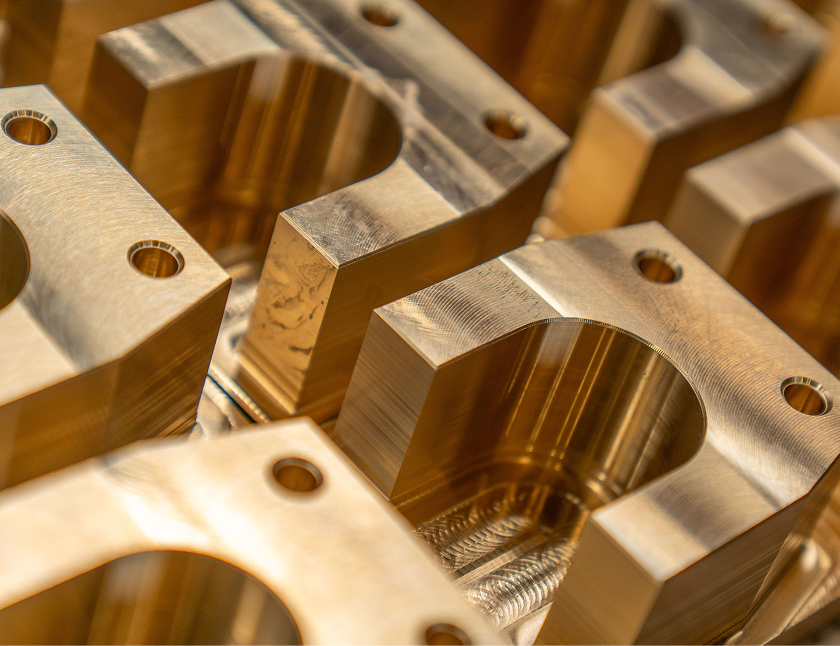
Machining & Sleeving
Machining and stainless-steel sleeving for brake calipers, servos and other cylinders.
Learn More →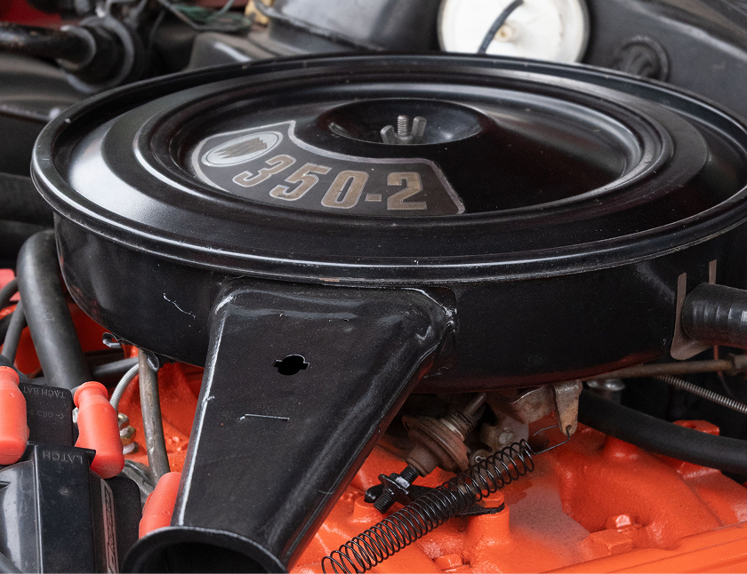
Refurbishing
Refurbishment of specialist components, including water pumps for Rover P6 models.
Learn More →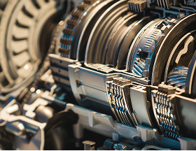
Repairing
Repairing damaged components to give otherwise unusable parts a new life.
Learn More →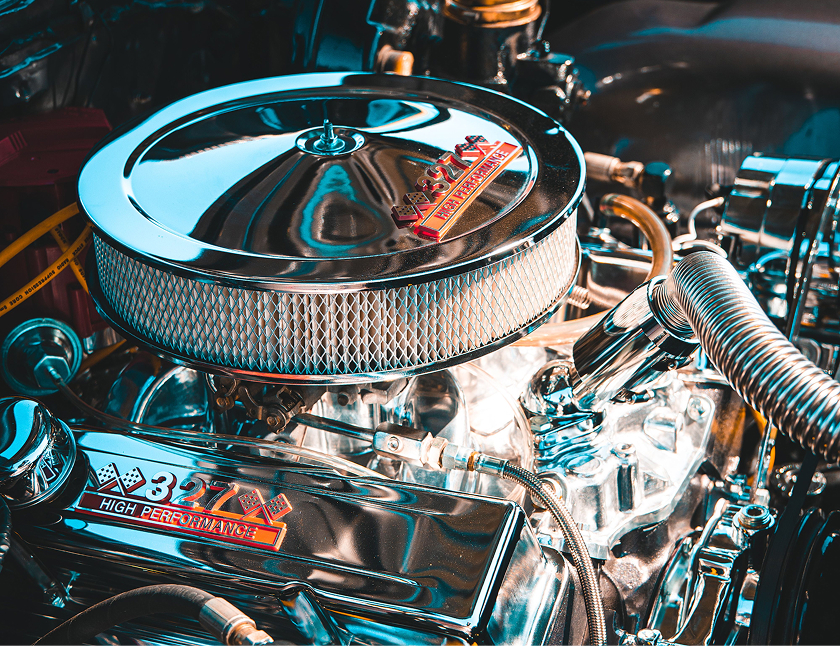
Chroming
Re-chroming for bumpers, overriders, wheel nuts and many other classic components.
Learn More →Polishing
Polishing services for components such as rocker covers to restore their shine.
Learn More →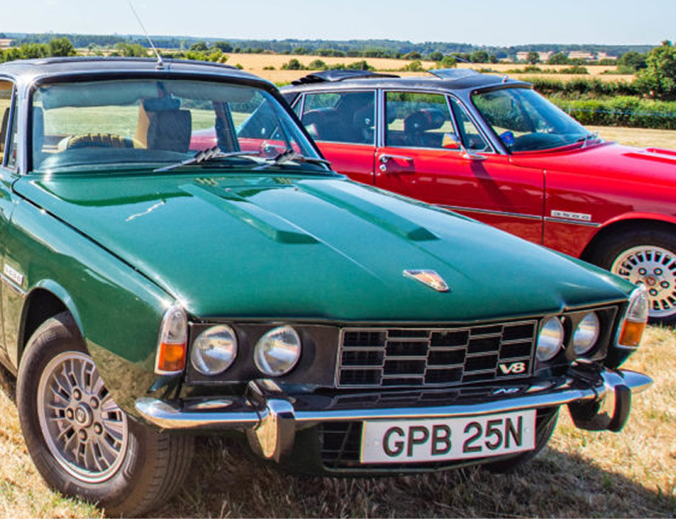
Body Work
Learn where hidden corrosion can develop in the P6’s unique body structure.
Learn More →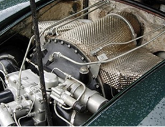
Engines
Discover common issues affecting the P6’s four-cylinder and V8 engines.
Learn More →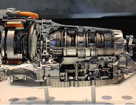
Transmission
Learn the warning signs of wear in manual and automatic transmissions.
Learn More →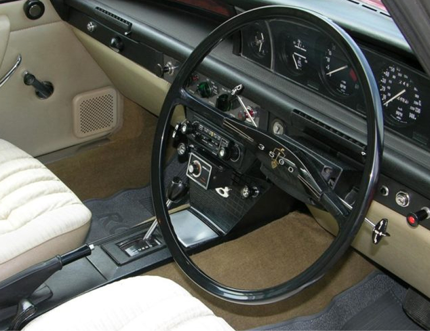
Steering & Suspension
Discover common wear points in the P6’s unusual steering and suspension.
Learn More →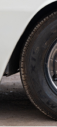
Wheels & Brakes
Learn what to inspect in the P6’s wheels and braking system.
Learn More →